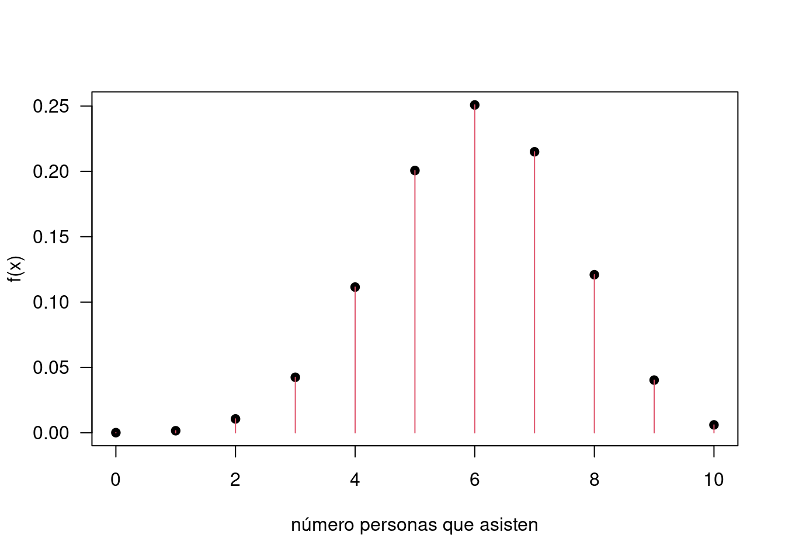
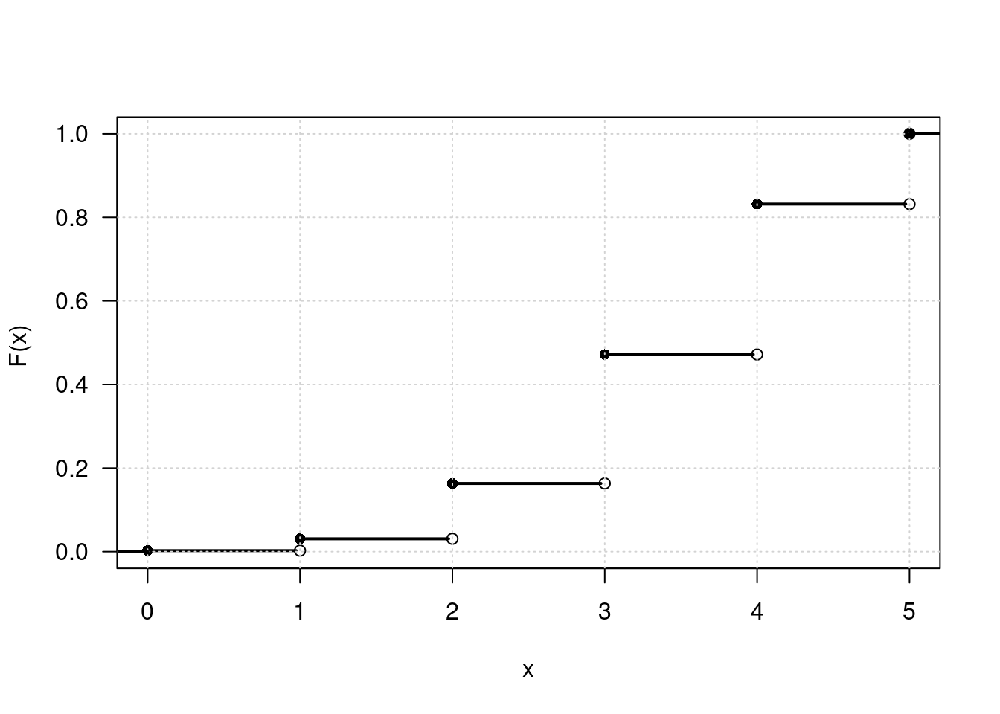
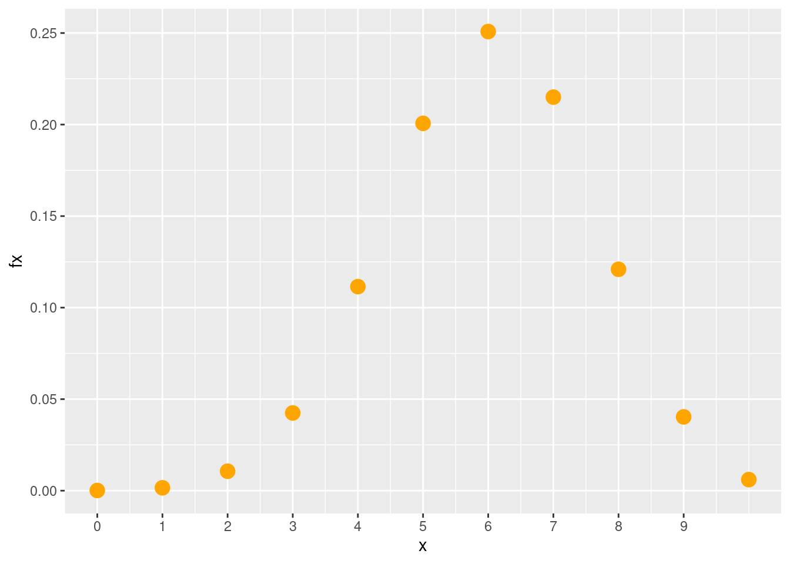
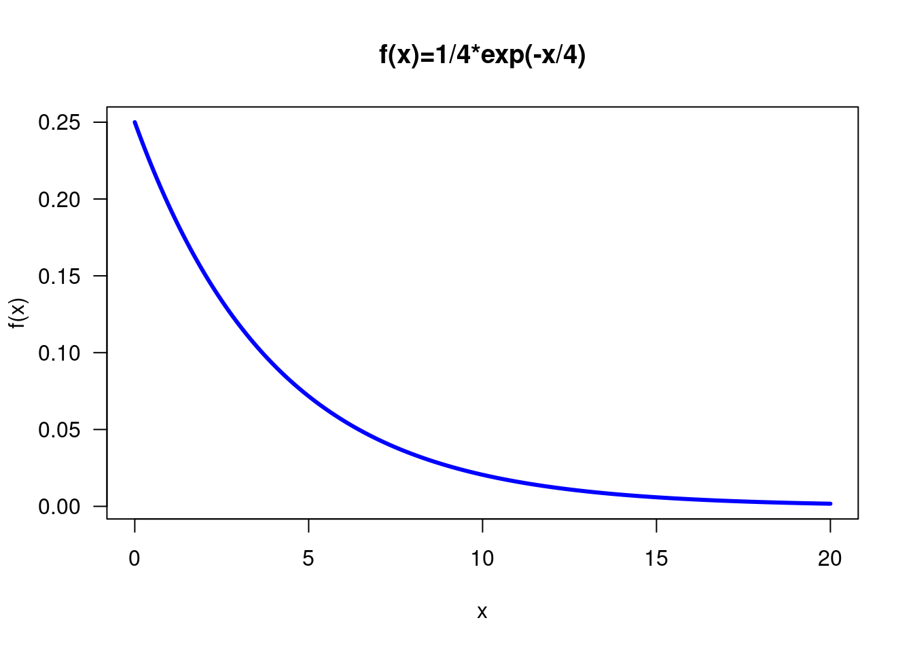
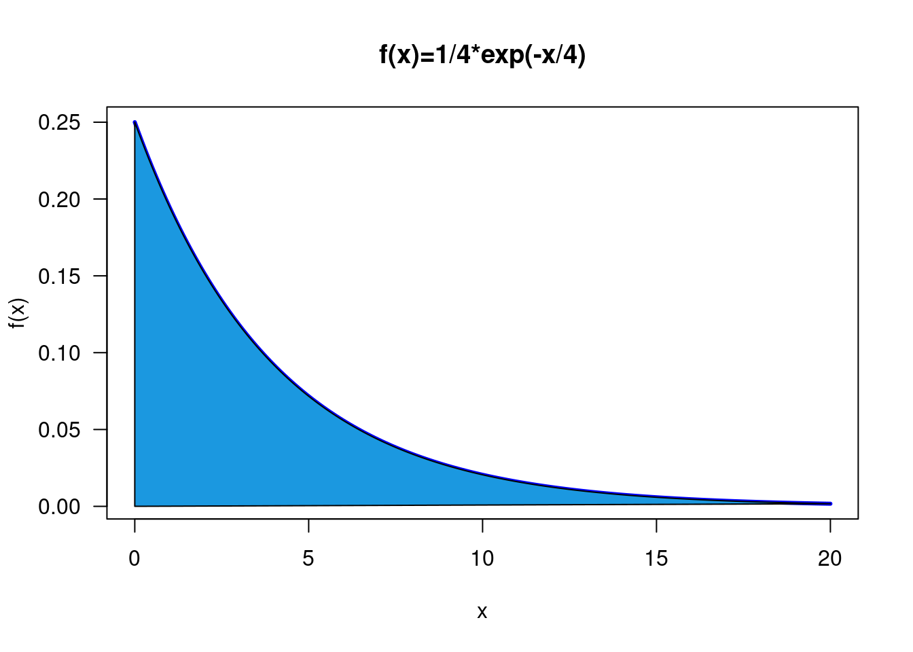
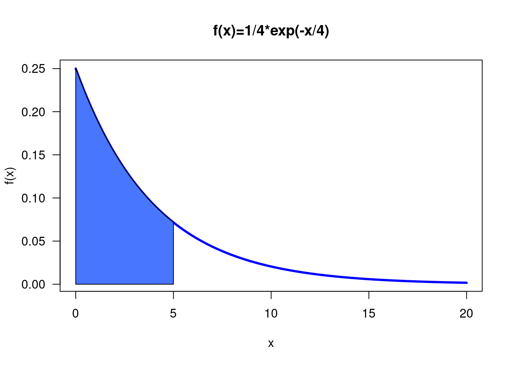
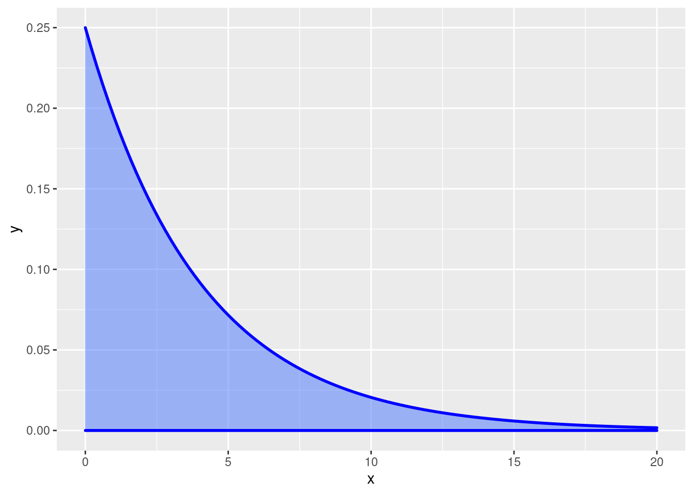

Para el desarrollo del Módulo 3, requerimos poder evaluar y representar funciones de variables tanto discretas como continuas.
x=0:10
fx=choose(10,x)*0.60^x*0.40^(10-x) Para verificar que es una función de distribucion de probabilidad sumamos todos sus valores
sum(fx)## [1] 1Para representar gráficamente la función utilizamos la función plot
x=0:10
fx=choose(10,x)*0.60^x*0.40^(10-x)
plot(x,fx, las=1, ylab="f(x)", xlab="número personas que asisten", pch=19)
lines(x, fx, type="h", col=2)
En el caso de la función de distribución acumulada, la podemos representar como una función a trozos
x=c(0,1,2,3,4,5,5)
f=function(x){
dbinom(x,5,.7)
}
hx=f(x)
Hx=cumsum(hx)
plot(x,Hx,type="n", ylim=c(0,1), xlab="x", ylab="F(x) ", las=1)
segments(x[-length(x)],Hx[-length(x)],x[-1]-.025,Hx[-length(x)],lwd=2)
points(x[-length(x)],Hx[-length(x)],pch=16)
points(x[-1],Hx[-length(x)],pch=1)
grid()
segments(-0.3,0, 0.0,lwd=2)
segments(5,1,5.2,1,lwd=2)
Tambien podemos utilizar el paquete ggplot2
library(ggplot2)
x=0:10
fx=choose(10,x)*0.60^x*0.40^(10-x)
dat=data.frame(x,fx)
ggplot(dat) + geom_point(aes(x, fx),colour = "orange", size = 4) +
scale_x_continuous(limits = c(0, 10),
breaks = c(0,1,2,3,4,5,6,7,8,9),
labels = c('0','1','2','3','4','5','6','7','8','9'))
Tambien podemos construir una tabla con las probabilidades asignadas a cada valor de \(X\)
x=0:10
fx=choose(10,x)*0.60^x*0.40^(10-x)
Fx=cumsum(fx)
dt=data.frame(x,fx,Fx)
dt## x fx Fx
## 1 0 0.0001048576 0.0001048576
## 2 1 0.0015728640 0.0016777216
## 3 2 0.0106168320 0.0122945536
## 4 3 0.0424673280 0.0547618816
## 5 4 0.1114767360 0.1662386176
## 6 5 0.2006581248 0.3668967424
## 7 6 0.2508226560 0.6177193984
## 8 7 0.2149908480 0.8327102464
## 9 8 0.1209323520 0.9536425984
## 10 9 0.0403107840 0.9939533824
## 11 10 0.0060466176 1.0000000000Las variables aleatorios continuas requieren el uso de integrales y por tanto su representación gráfica corresponde a una área bajo la \(f(x)\)
curve(1/4*exp(-x/4) , from=0, to=20, n=300, xlab="x", ylab="f(x)",
col="blue", lwd=3, main="f(x)=1/4*exp(-x/4)", las=1 )
x=seq(from = 0, to = 20, by = 0.1)
y=function(y){1/4*exp(-y/4)}
fx=y(x)
plot(x,fx, xlab="x", ylab="f(x)", type="l",
col="blue", lwd=3, main="f(x)=1/4*exp(-x/4)", las=1 )
x1=c(0,x,0)
fx1=c(0,fx,0)
polygon(x1, fx1,col = "#1b98e0") 
Si se requiere una parte sombreada reducimos el rango de los dos conjuntos
x=seq(from = 0, to = 20, by = 0.1)
y=function(y){1/4*exp(-y/4)}
fx=y(x)
plot(x,fx, xlab="x", ylab="f(x)", type="l",
col="blue", lwd=3, main="f(x)=1/4*exp(-x/4)", las=1 )
x1=seq(from=0, to=5,by=0.1)
fx1=y(x1)
x1=c(0,x1,5)
fx1=c(0,fx1,0)
polygon(x1, fx1,col = "#4876FF") 
Se puede utilizar la libreria de ggplot2
library(ggplot2)
ggplot(data.frame(x=c(0, 20)), aes(x)) +
stat_function(fun=function(x){1/4*exp(-x/4)},colour="blue", size=1,
geom="area", fill="#4876FF", alpha=0.5) 
\(\displaystyle\int\limits_{0}^{+\infty} \dfrac{1}{4} e^{-y/4} \:dx\)
fy=function(y){1/4*exp(-y/4)}
integrate(fy, lower=0,upper=Inf)## 1 with absolute error < 2.7e-05